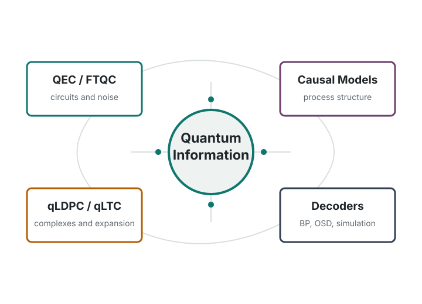

Quantum Information Theory
Quantum causal inference, quantum benchmarking, retrodiction, and operational ways of describing quantum processes beyond full tomography.
PhD Applicant | Quantum Information and Mathematical Structures
I am a third-year undergraduate student at the Hong Kong University of Science and Technology, majoring in Physics and Computer Science. I am preparing for doctoral research in theoretical quantum information, with current interests in quantum error correction, qLDPC/qLTC codes, quantum causal inference, and the mathematical structures behind fault-tolerant quantum computation.

Research Interests
Quantum causal inference, quantum benchmarking, retrodiction, and operational ways of describing quantum processes beyond full tomography.
Stabilizer and CSS codes, toric and color codes, fault-tolerant syndrome extraction, flag-qubit constructions, and decoder behavior under circuit-level noise.
Homological viewpoints on CSS codes, qLDPC constructions, high-dimensional expanders, local testability, and the role of expansion in distance and soundness.
Reproducible simulations and implementation-driven reading using Python, Stim, decoder baselines, and small circuit-level examples.
Research Training
Technical Notes
Exploratory technical note in progress. The current goal is to organize definitions, toy examples, and possible reduction mechanisms related to high-dimensional expansion and qLDPC/qLTC code constructions.
Education
BSc student in Physics and Computer Science, expected 2027.
Current CGA: 3.56 / 4.3. TOEFL iBT: 113.
Skills
Python, Stim, C++ basics, R, numerical simulation, stabilizer formalism, CSS codes, chain complexes, homology/cohomology basics, group theory basics, and introductory high-dimensional expander language.